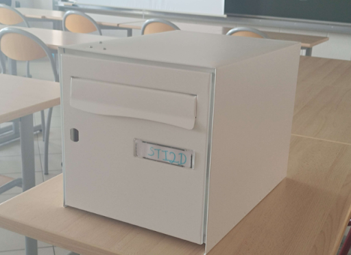
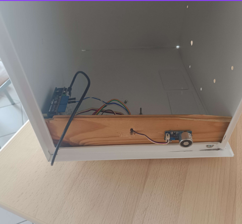
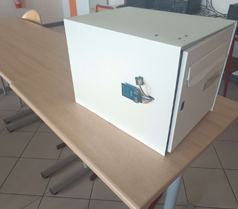
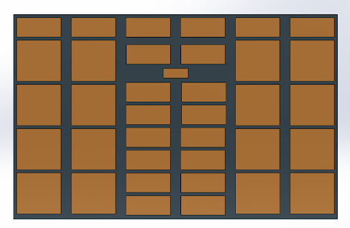

Social
Le casier rendra le stockage d’affaires plus sécurisé et ergonomique.
Economique
Le casier sera disponible à l’achat dans le secteur public et privé.
Il permettra également de résoudre les douleurs dûe aux charges trop lourdes
Environnement
Le casier sera fait de matériaux recyclables et alimenté en énergie solaire via des panneaux solaires.
A quoi sert le projet
Ce casier servira à stocker les affaires des lycéens et du personnel grâce à leur carte HDF, c’est une manière de sécuriser les affaires sans avoir besoin d’acheter un cadenas.
Il permettra de sécuriser et de gagner de la place pour les élèves. Ils pourront se débarrasser de leurs affaires, par exemple lorsqu'il vont en sport ou alors quand ils sont trop chargés.
Membres du groupe :
Dorsaix Louis
Grévin Antoine
Dumont Lucas
Furtin Alexandre
Modélisation
